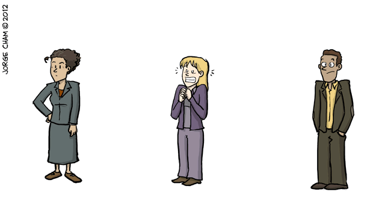

Meet the academics
Raoul is a diligent and hard working PhD student: He immerses himself in his subject, and feels like there is so much to learn with so little time. He may often feel on the outside looking in, racked with doubt, wondering whether he could ever contribute something meaningful to their field. His supervisor has given him some old code, allegedly related to an unrecognisably early version of their PhD project, maybe in something like FORTRAN or Matlab. Peter doesn't have time to stop and smell the roses, he has to get cracking to produce results, write papers, defend, and get on the fast-track to academic success! For him, his main priority is learning his subject, and generating a new contribution to his field.
Tasha has put in the endless hours grinding, made it through the trauma of her PhD with only minor mental scarring, and found that she now has more work and responsibilities than ever, but with even less time! She needs to get uber serious, as she tries to publish papers from her thesis, go to conferences, and produce 'trend-setting' new research to become known in her field and make it out of 'permadoc hell'. She might have a steadily growing collection of hacky scripts to process their data, or maybe even some monolithic Excel spreadsheets with VBA macros. She couldn't possibly change the way she works now: it would be a huge set-back not only to loose all that past work, but also to invest all the time learning new tools. And hey, what she has been doing has worked up till now---no journal has ever even asked about her code---so it would be foolish to waste the time changing now.
Assistant Professor Smith has worked hard and made many sacrifices to get where she is, yet she is going to have to push even harder to reach tenure. Time for her to rise to prominence in her field and earn international renown. She will likely travel several times each month, and compete in an ever more cut-throat environment for funding, whilst simultaneously building a dynamic research group populated with people like Postdoc Tasha and PhD Student Raoul. All to prove to her university that she has what it takes to be a permanent staff member! Not only would Assistant Professor Smith never dream of going back to square 1 and learning basic working methods again, but in reality she probably rarely does any research herself any more. Instead, she directs her underlings when she has time, and encourages them to re-use and build on whatever pipelines and scripts she built-up on her climb to her current post, as that has the least mental overhead for her to lend a hand when her minions get into trouble.
What's the problem?
If successful, Assistant Professor Smith will join the ranks of tenured professors in her University and take on more teaching and administration responsibilities. Over time, her practices may be enshrined in courseware and become part of the institutional practices at their University.
In terms of enabling best research practices to spread, these profiles have an anti-pattern built into them. Bad practices are left uncorrected as there is no incentive to improve and refine old work, optimise working methods for reproducibility. In fact, stopping to improve existing research could be a serious competitive disadvantage: You have to remember that at each stage up this career pyramid there are far-fewer positions, and the competition and stakes becomes far greater. By the time Assistant Professor Smith goes after their tenure, they have almost certainly invested 100% of their adult life into getting their position, professionally and personally. To let up for even a moment could be the difference between being the best, and being the second best candidate --- a disaster, as their peers are all seeking the same goal.
So academics become trapped in an endless race against the clock and their peers to produce new results and gain all the kudos possible. As a result, many research pipe-lines simply remain black-boxes, perhaps no better than random-number generators. Many researchers have no immediate way to reliably check their various scripts and disjointed tools are not producing incorrect results, and are not aware of how to go about doing so even if they wanted to.
Moreover, the lifetime of academic software, the key component driving modern science, is usually strongly correlated to the length of the authors contracts. Usually a researchers main concern revolves around getting code working on their local machine, and producing results one time, often with multiple (undocumented) intermediate processing steps. Thus, there is a strong tendency for projects to generate abandonware: unmaintained software which rapidly degrades into obsolescence.
How can Student Raoul, in the course of their arduous career journey to the level of Professor Smith, hope to break this anti-pattern? When should they start? And what might the impacts of doing so be to their career? Should they even bother? Over the course of the next few blog-posts I hope to address this question and more!
Original banner image by Jorge Chan.
Go Top
comments powered by Disqus